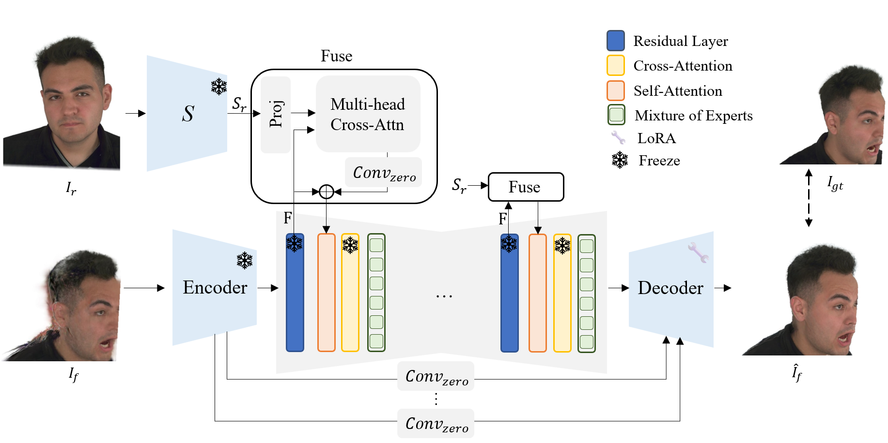

Learn the failures.
Learn to repair avatar artifacts using paired synthetic failures and identity references.
KAIST · VISUAL MEDIA LAB
Repair a Gaussian avatar with identity-guided diffusion. Keep the improvements in 3D—and the original rendering pipeline.
01 / SEE THE REFINEMENT
Compare the original and refined avatars. Pause, scrub, or move the divider to inspect the details.
All EDGAR results are rendered from the refined 3D avatar.
02 / FROM IMAGES BACK TO 3D
Diffusion supplies the supervision. A shared Gaussian representation carries the result into new views and expressions.
Learn to repair avatar artifacts using paired synthetic failures and identity references.
Refine rendered views with identity-guided diffusion.
Transfer the improvements into a shared Gaussian avatar, ready to render without per-frame diffusion.
Identity conditioning and expression supervision guide the image refiner.

03 / RESULTS
Reconstruction quality and rendering speed, before and after refinement.
THE COST IS PAID ONCE
The refined avatar keeps the original renderer, with nearly unchanged rendering speed.
| Pipeline | Refine once | Before FPS | EDGAR FPS |
|---|---|---|---|
| CAP4D | 5.04 min | 50.3 | 49.4 |
| RGBAvatar | 7.96 min | 813.8 | 826.3 |
| GaussianAvatars | 16.60 min | 153.4 | 156.1 |
Measured on an RTX 3090. See the paper for evaluation details.
Missing regions and severe structural errors remain challenging.
Extreme poses and mouth interiors can retain artifacts.
Improvements vary by metric and reconstruction pipeline.
@misc{yun_edgar,
title = {EDGAR: Efficient Diffusion-Driven
Gaussian Avatar Refinement via Synthetic Failure},
author = {Yun, Kwan and Bang, Min-Hyeok and
Koo, Colette Suhjung and Noh, Junyong},
note = {Research manuscript}
}